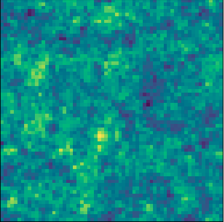

Reconstructing the Initial Conditions of the Universe
ML + X Symposium, May 29th, 2023
Chirag Modi
Center for Computational Astrophysics
Center for Computational Mathematics
Flatiron Institute
Outline of this talk
This talk will consist of 3 parts.
The story of our Universe
$\rightarrow$ Why reconstruction?
Differentiable simulations
High dimensional inference
Differentiable simulations
High dimensional inference


Credits: M. Blanton and SDSS
Standard model: $\Lambda$-CDM
$\Lambda$: cosmological constant dark energy
CDM: Cold dark matter
$\Lambda$: cosmological constant dark energy
CDM: Cold dark matter
Open questions
- What is dark energy?
- What is dark matter made of?
- How did inflation happen?
- What are the masses of neutrinos?
- Is GR the theory of gravity?
- ...
A paradigm shift
$\rightarrow$ Why reconstruction?
Differentiable simulations
High dimensional inference
Differentiable simulations
High dimensional inference
Large amount of high precision data from the next generation of cosmological surveys.
Dark Energy Spectroscopic Instrument (DESI)
- 14,000 square degrees over 5 years
- 35 million galaxies and quasars in 0 < z < 3.5
- In 7 months, it has already mapped out more galaxies than all of the previous 3D surveys combined.

DESI Collaboration: 1611.00036
Vera C. Rubin Observatory
( Large Synoptic Survey Telescope, LSST)
( Large Synoptic Survey Telescope, LSST)
- 18,000 square degrees, once every few days for 10 years
- Tens of billions of objects, each observed ~1000 times
- Galaxy clustering, weak lensing, supernovae & more

LSST Collaboration
Promise of the modern cosmological surveys
$\rightarrow$ Why reconstruction?
Differentiable simulations
High dimensional inference
Differentiable simulations
High dimensional inference
 Forecast for dark energy equation of state parameters from LSST
Forecast for dark energy equation of state parameters from LSST
LSST Collaboration (2018)
How do we do galaxy clustering analysis?
$\rightarrow$ Why reconstruction?
Differentiable simulations
High dimensional inference
Differentiable simulations
High dimensional inference
Data: a catalog of galaxies with their positions.
- Compute summary statistics of choice
- $\rightarrow$ generally 2-point correlation function or power spectrum
- Develop theoretical predictions for these summary statistics
- $\rightarrow$ generally based on perturbation theory
- Construct an analytic likelihood model
- $\rightarrow$ generally assumed to be Gaussian
- Profit: run MCMC to infer posterior on model parameters, $\,p(\theta | x ) \propto p(x | \theta) \ p(\theta)$
$$\xi_2(|x_1-x_2|) = \langle \delta(x_1) \delta(x_2) \rangle$$


Moving ahead, each of these steps is a limiting factor!

Measurement of 2-pt correlation function from BOSS survey

An example of perturbation theory integrals

Gaussian likelihood function for power spectrum

Example constraints from BOSS data analysis
Credit: M. Blanton and the Sloan Digital Sky Survey.
Ross et al. (2016)
Beutler et al. (including CM) (2016)
Beutler et al. (including CM) (2016)
Ross et al. (2016)
Beutler et al. (including CM) (2016)
Beutler et al. (including CM) (2016)
Kobayashi, Nishimichi et al. (2022)
Ivanov, Simonovic, Zaldarriaga (2020)
Limitations of current analyses
$\rightarrow$ Why reconstruction?
Differentiable simulations
High dimensional inference
Differentiable simulations
High dimensional inference
-
We need to choose a summary statistic.
- Power spectrum (and 2-point correlation function) is no longer sufficient.
- Other summary statistics extract more information from the non-Gaussian data.
- We need theoretical models of the summary statistics.

Breakdown of perturbation theory on small scales (k>0.2 h/Mpc)


But which of these statistics?
three point function
bispectrum
trispectrum
peak counts
k-nearest neighbor
marked power spectrum
density splits
wavelet coefficients
Minkowski functionals
...
bispectrum
trispectrum
peak counts
k-nearest neighbor
marked power spectrum
density splits
wavelet coefficients
Minkowski functionals
...
How can we overcome these limitations in the future?
Field-level Inference with forward modeling
$\rightarrow$ Why reconstruction?
Differentiable simulations
High dimensional inference
Differentiable simulations
High dimensional inference
Use computational simulations to forward-model the field-level data without any compression.
$\rightarrow$ Simultaneously infer the initial conditions of the Universe and the cosmological parameters.
$$ \log p(z | x) \propto \log p(x| f(z)) \ + \log p(z) $$
E.g., infer the initial conditions ($z$) by maximizing the posterior: $\hat{z} = \max_z \log p(z | x)$
Computational forward-models in cosmology

But which summary statistic?
bispectrum
three point function
trispectrum
reconstructed power spectrum
peak counts
k-nearest neighbor
marked power spectrum
density splits
wavelet coefficients
Minkowski functionals
...
three point function
trispectrum
reconstructed power spectrum
peak counts
k-nearest neighbor
marked power spectrum
density splits
wavelet coefficients
Minkowski functionals
...

True initial conditions
$z_0$

Reconstructed initial conditions $z$

Reconstructed data
$x' = f(z)$

Data
$x = f(z_0)$
In addition to inferring a handful of cosmology parameters,
we now also wish to estimate millions of latent parameters.
1.
Optimal
analysis
2.
New science
cases
we now also wish to estimate millions of latent parameters.
Why?
1.
Optimal
analysis
2.
New science
cases
Why field-level inference #1
$\rightarrow$ Why reconstruction?
Differentiable simulations
High dimensional inference
Differentiable simulations
High dimensional inference
It is the optimal approach to cosmological analysis
- Statistical perspective:
$\rightarrow$ no information is lost by compressing data into summary statistics. - Physical perspective:
$\rightarrow$ undo non-linear evolution to recover the Gaussian initial conditions.
$\rightarrow$ standard reconstruction for Baryon Acoustic Oscillations (BAO) leading to surveys like BOSS & DESI

Modi et al. (in preparation)
Modi, Feng, Seljak (2018)
Eisenstein et.a. (2007)
Seo et al. (2007)
Modi, Feng, Seljak (2018)
Eisenstein et.a. (2007)
Seo et al. (2007)
Why field-level inference #2
$\rightarrow$ Why reconstruction?
Differentiable simulations
High dimensional inference
Differentiable simulations
High dimensional inference
Reconstruct unobserved fields to enable new analyses.
Unique to field-level inference!
Other e.g. initial density for primordial physics, dark matter for galaxy formation.
HIRAX


True
Distribution
Distribution

Noisy
Data
Data

Reconstructed Data


Modi, White et al. (2019)
Modi, Castorina et al. (2019)
Modi, White et al. (2021)
Modi, Castorina et al. (2019)
Modi, White et al. (2021)
Field-level inference with reconstructing the initial conditions of the Universe enables:
1. optimal cosmological analysis,
2. unique opportunities for new science cases,
3. joint analyses of different datasets ...
1.
Differentiable
Simulations
2.
High dimensional
inference
1. optimal cosmological analysis,
2. unique opportunities for new science cases,
3. joint analyses of different datasets ...
So what do we need need to do to enable it?
1.
Differentiable
Simulations
2.
High dimensional
inference
Why differentiable simulations?
Why reconstruction?
$\rightarrow$ Differentiable simulations
High dimensional inference
$\rightarrow$ Differentiable simulations
High dimensional inference
Fast, differentiable cosmological simulations.
Opening up the cosmological simulations
Why reconstruction?
$\rightarrow$ Differentiable simulations
High dimensional inference
Evolving dark-matter particles under gravity. $\rightarrow$ Differentiable simulations
High dimensional inference
Particle-Mesh simulations: approximate gravitational forces by estimating densities on a grid.
- The numerical scheme:
- Estimate the density of particles on a mesh
- Compute gravitational forces by FFT
- Interpolate forces at particle positions
- Update particle velocity and positions, and iterate
- Fast and simple, at the cost of approximating short range interactions.


$\Longrightarrow$ Only a series of FFTs and interpolations.
Introducing FlowPM: Particle-Mesh Simulations in TensorFlow
Why reconstruction?
$\rightarrow$ Differentiable simulations
High dimensional inference
$\rightarrow$ Differentiable simulations
High dimensional inference
- Access to
- Automatic differentiation
- Access to SOTA inference algorithms
- Seamless interfacing with deep-learning tools
$\rightarrow$ Reconstructing the Universe in 10 lines


-
Scalable with distribution to multiple GPU
- 2048$^3$ simulation on 256 GPU in 3 min
import tensorflow as tf
import flowpm
#Run simulation from variable initial conditions
linear = tf.get_variable('linear', shape=(nc, nc, nc),
initializer=tf.random_normal_initializer(), trainable=True)
initial_conditions = flowpm.lpt_init(linear, name='icstate')
final_state = flowpm.nbody(initial_conditions, stages, nc, name='fnstate')
final_field = flowpm.cic_paint(tf.zeros_like(linear), final_state[0], boxsize=bs)
#Likelihood term: ((data-model)/noise)^2
residual = tf.multiply(tf.subtract(final_field, data), 1/sigma)
neg_log_likelihood = tf.reduce_sum(tf.multiply(residual, residual))
#Prior: (linear_modes^2 / linear_power_spectrum)
lineark = flowpm.r2c3d(linear, norm=nc**3)
neg_log_prior = tf.square(tf.cast(tf.abs(lineark), tf.float32))
neg_log_prior = tf.reduce_sum(tf.multiply(neg_log_prior, 1/priorwt))j
#Loss & optimize
loss = tf.add(neg_log_likelihood, neg_log_prior, name='loss')
optimizer = ScipyOptimizerInterface(loss, var_list=[linear], 'L-BFGS-B')
with tf.Session() as session:
optimizer.minimize(session)
recon = session.run(linear)

Credits: F. Lanusse
Seljak, Aslanyan, Feng, Modi (2017)
Modi, Lanusse, Seljak (2020)
https://github.com/DifferentiableUniverseInitiative/flowpm
Modi, Lanusse, Seljak (2020)
https://github.com/DifferentiableUniverseInitiative/flowpm
Advances in differentiable cosmological simulations
Why reconstruction?
$\rightarrow$ Differentiable simulations
High dimensional inference
$\rightarrow$ Differentiable simulations
High dimensional inference
Bottleneck : Memory limited as every snapshot of the simulation is saved to estimate the gradients.
$pmwd$: particle mesh with derivatives
- Exploit reversibility of leapfrog integration in adjoint gradient evaluation
- Memory cost is independent of the time stepping


 time-scaling for $pmwd$ simulations
time-scaling for $pmwd$ simulations$\rightarrow pmwd$ is faster than deep learning emulators
Li, Lu, Modi et al. (2022)
https://github.com/eelregit/pmwd
Using differentiable simulations for high dimensional inference
1. Maximum-a-posteriori estimate (MAP optimization)
1. Maximum-a-posteriori estimate (MAP optimization)
MAP optimization in action
Why reconstruction?
Differentiable simulations
$\rightarrow$ High dimensional inference
$$\arg\max_s \ \log p(x_{dm} | f(s)) \ + \ p(s) $$
Differentiable simulations
$\rightarrow$ High dimensional inference
True initial conditions
$s_0$
Reconstructed initial conditions $s$
Reconstructed dark matter distribution $x_{dm} = f(s)$
Data
$x_{dm} = f(s_0)$
Check out this blogpost for more details
https://blog.tensorflow.org/2020/03/simulating-universe-in-tensorflow.html
https://blog.tensorflow.org/2020/03/simulating-universe-in-tensorflow.html
If only MAP optimization was easy...
Why reconstruction?
Differentiable simulations
$\rightarrow$ High dimensional inference
$$\arg\max_s \ \log p(x_{dm} | f(s)) \ + \ p(s) $$
Differentiable simulations
$\rightarrow$ High dimensional inference
Direct optimization


ad-hoc annealing


- $\rightarrow$ Cross Correlation ($r_c$) with true initial conditions
$$
r_c(k) = \frac{P_{ab}(k)}{\sqrt{P_a(k)P_b(k)}}
$$
- $\rightarrow$ Transfer Function ($t_f$) with true initial conditions
$$t_f(k) = \sqrt{\frac{P_a(k)}{P_b(k)}}$$


- Direct optimization of MAP leads to poor solutions on large scales.
- Annealing recovers unbiased large scales, but at the cost of ad-hoc tempering procedure.
High dimensional optimization is hard, can we
learn to optimize?
A closer look at the optimization algorithm
Why reconstruction?
Differentiable simulations
$\rightarrow$ High dimensional inference
Differentiable simulations
$\rightarrow$ High dimensional inference
$$\arg\max_x \ \log p(y | f(x)) \ + \ p(x) $$
- Standard Gradient Descent Algorithm:
$$x_{i+1} = x_i - \epsilon \nabla_x \big(\log p(y | f(x_i)) + \log p(x_i) \big)$$
$$x_{i+1} = \Gamma \Big(x_i,\, \nabla_x \big(\log p(y | f(x_i)) + \log p(x_i)\big ) \Big)$$ with update function $\Gamma (u,v) \rightarrow u + \epsilon v$ - Many algorithms (e.g. ADAM, LBFGS) can expressed in this form with a different choice of $\Gamma$.

$\Longrightarrow$ What if we could learn this update function?
CosmicRIM: Recurrence Inference Machines for Initial Condition Reconstruction
Why reconstruction?
Differentiable simulations
$\rightarrow$ High dimensional inference
Differentiable simulations
$\rightarrow$ High dimensional inference
Modi, Lanusse et.al. (2021)
Putzky & Welling (2017)
Putzky & Welling (2017)
Recurrent Neural Network Architecture


- Multiscale, U-Net architecture
- Input
- $\rightarrow$ current position on the optimization path ($x_i$)
- $\rightarrow$ gradient of the objective function scaled with ADAM update ($a_i$)
- Output
- $\rightarrow$ Updated position, i.e. next iteration ($x_{i+1}$)
- $\rightarrow$ Different evolution on small and large scales
Experiments
Why reconstruction?
Differentiable simulations
$\rightarrow$ High dimensional inference
Differentiable simulations
$\rightarrow$ High dimensional inference
Settings
- Data: Halo mass weighted field, $\bar{n}=10^{-3}$ (h/Mpc)$^3$
- Forward model: $64^3$ particles, 400 Mpc/h box, 2LPT dynamics with 2nd order bias model
- RIM: 10 steps, trained under L2 loss
Initial conditions cross-correlation


Transfer function

- CosmicRIM: Learn to optimize by embedding a Neural Network in the optimization algorithm.
$\Longrightarrow$ converges 40x faster than LBFGS.
Beyond MAP estimate:
accelerating posterior inference with machine learning tools
accelerating posterior inference with machine learning tools
Inferring posterior in high dimensions
Why reconstruction?
Differentiable simulations
$\rightarrow$ High dimensional inference
Differentiable simulations
$\rightarrow$ High dimensional inference
1. Hamiltonian Monte Carlo (HMC)
Use gradients to obtain random samples from the posterior.
2. Variational Inference (VI)
Approximate the posterior with a parametric distribution $q(z; \nu)$
True Initial conditons

HMC Samples


Auto-correlation length of HMC samples as function of scales for 4 chains.
Can we combine HMC and VI to complement each others shortcomings?
Variational self-Booseted Sampling (VBS)
Why reconstruction?
Differentiable simulations
$\rightarrow$ High dimensional inference
Differentiable simulations
$\rightarrow$ High dimensional inference
Combine HMC and VI to generate samples from the target with smaller auto-correlation length
Motivation
- HMC is good at generating samples from the target
- Samples generated from the variational distribution $q$ are independent
Two Phase Algorithm
- Phase I- Learning
$\rightarrow$ HMC to generate samples
$\rightarrow$ use these samples to learn $q$ with forward KL loss - Phase II- Hybrid sampling
$\rightarrow$ alternate b/w making proposals from HMC kernel & $q$
$\rightarrow$ accept HMC and variational proposals to maintain DB
$\rightarrow$ Keep updating $q$ with all samples

Modi, Li, Blei (2022)
Efficiency gain with VBS
Why reconstruction?
Differentiable simulations
$\rightarrow$ High dimensional inference
Differentiable simulations
$\rightarrow$ High dimensional inference
- Experiment #1: Fiducial configuration
L = 200 Mpc/h, N = 64
~40x gains in terms of auto-correlation length - Experiment #2: Low signal-to-noise
L = 500 Mpc/h, N = 64
~10x gains
HMC performs much better than the fiducial case - Experiment #3: Scaling to higher dimensions
L = 1000 Mpc/h, N = 128
~10-40x gains
stronger scale dependence in gains


Summary
Summary
Main Takeaways
- Cosmological forward modelling.
$\Longrightarrow$ Field level inference for optimal cosmological analysis.
$\Longrightarrow$ Reconstruct the initial conditions of the Universe. - Differentiable simulations.
$\Longrightarrow$ FlowPM, Mesh-FlowPM, $pmwd$
$\Longrightarrow$ enable efficient simulator-based inference and hybrid physical/deep learning models. - Learned optimization & sampling.
$\Longrightarrow$ Recurrent Inference Machines allow us to efficiently navigate complex, non-convex posteriors.
$\Longrightarrow$ Variational Self Boosted Sampling reduces auto-correlation length by combining HMC and VI
Thank you !